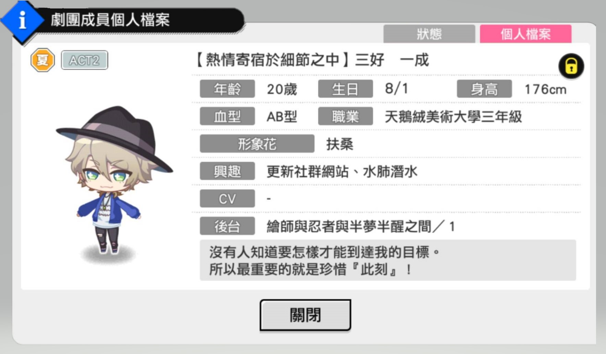
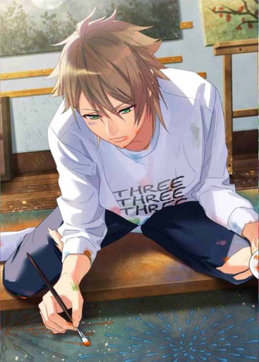

Act2 設定
稱呼（綽號）
三好さん（交往前）、一くん（曖昧時期）、一成（交往後）
跟Act1不同之處
對於未來想得更多，很仔細的考慮自己未來的方向，也為此煩惱過。
嘗試擔任公演主角，並受到夏組大家很多的幫助，想好好珍惜跟大家一起待在劇團的時候。
跟瑋瑋交往後，兩個人會彼此互相激勵，因為兩個人都很常一專心做報告就忘記吃飯，常常被身邊的人擔心（餵食）。
喜歡帶瑋瑋去約會景點約會，目標是帶她瀏覽世界各地。